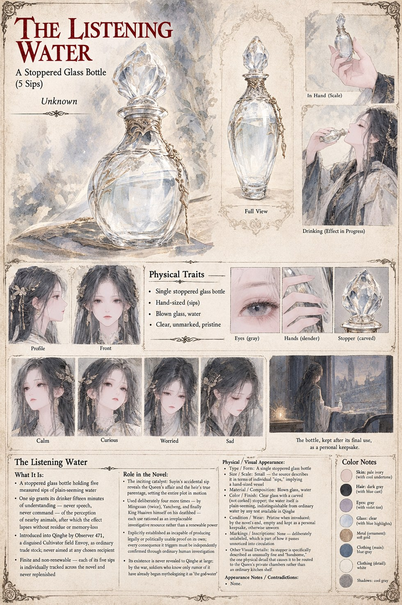

The Listening Water
A Stoppered Glass Bottle, Five Measured Sips · the Catalyst of Case 3115
A single stoppered glass bottle, plain and unmarked, holding five individually measured sips of water indistinguishable from any other by taste, smell, or any test available in Qinghe. One sip grants its drinker fifteen minutes of a nearby animal's own perception — never its speech, never its command — after which the effect lapses without residue or memory-loss. It is introduced into Qinghe as ordinary trade stock by Observer 471, and never once reclaimed.
Four of its five sips are used deliberately — by Mingxuan twice, by Yancheng once, and by King Huairen himself on his own deathbed — while the first is spent by Suyin entirely by accident. Qinghe's own soldiers, knowing only rumor of it by the war's end, have already begun mythologizing it as “the god-water” long before the emptied bottle is kept, quietly, as somebody's private keepsake.
“Understanding, not command; borrowed, not kept.”
Appears in The Listening Water